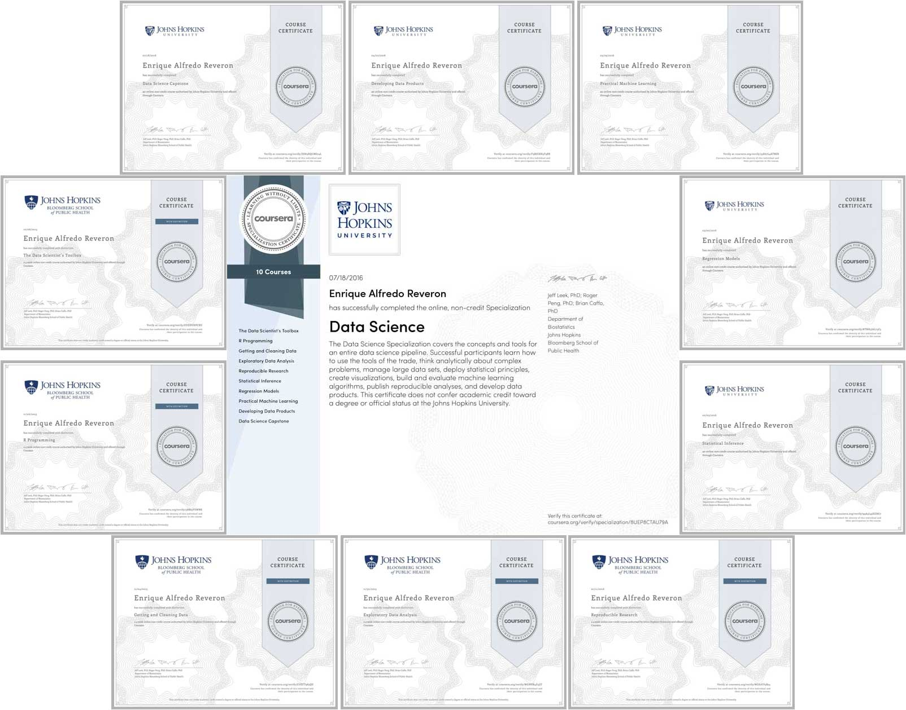

Johns Hopkins University
Data Science Specialization - Coursera
This repository include examples of my work related with the Data Science Specialization from Johns Hopkins University thought Coursera.
The Data Science Specialization include nine (9) courses and a final Capstone Project. The courses are taught by professors Brian Caffo, PhD, Jeff Leek, PhD, and Roger Peng, PhD, of the Bloomberg School's Department of Biostatistics.
The program is entirely online; every class includes quizzes, projects and programming. Each course is four weeks long, and the final Capstone Project is seven weeks long.
I decided to start this Specialization as a independent an personal goal with the main objective of build the foundations to enroll in a formal Graduate Course (a Master Program) in the near future.
I started on September 2015 and finish the Capstone Project on July 2016, this is the list of the courses and some examples of my work on it:
-
The Data Scientist's Toolbox: this course provide an introduction to the main tools and ideas in the data scientist's toolbox. The course gives an overview of the data, questions, and tools that data analysts and data scientists work with. There are two components to this course. The first is a conceptual introduction to the ideas behind turning data into actionable knowledge. The second is a practical introduction to the tools that will be used in the program like version control, markdown, git, GitHub, R, and RStudio.
- Date: from 09/07/2015 to 10/03/2015
- Verified Certificate
-
R Programming: this course covers practical issues in statistical computing which includes programming in R, reading data into R, accessing R packages, writing R functions, debugging, profiling R code, and organizing and commenting R code. Topics in statistical data analysis will provide working examples.
- Date: 10/31/2015
- Verified Certificate
- Examples of my work:
- Programming Assigment 2 on GitHub: This second programming assignment require to write an R function that is able to cache potentially time-consuming computations.
-
Getting and Cleaning Data: this course cover the basic ways that data can be obtained. The course cover obtaining data from the web, from APIs, from databases and from colleagues in various formats. It also cover the basics of data cleaning and how to make data “tidy”. The course also cover the components of a complete data set including raw data, processing instructions, codebooks, and processed data. The course cover the basics needed for collecting, cleaning, and sharing data.
- Date: 10/31/2015
- Verified Certificate
- Examples of my work:
- Data Course Project on GitHub: this project request to use the Human Activity Recognition Using Smartphones Dataset to do some tipycal operations like: merges the training and the test sets, extracts only some specific measurements, use descriptive activity names to name the activities in the data set, appropriately labels the data set with descriptive variable names and create a tidy dataset with the average of each variable for each activity and each subject.
-
Exploratory Data Analysis: this course covers the essential exploratory techniques for summarizing data. The course cover in detail the plotting systems in R as well as some of the basic principles of constructing data graphics. Also cover some of the common multivariate statistical techniques used to visualize high-dimensional data.
- Date: 11/28/2015
- Verified Certificate
- Examples of my work:
-
Project 2 on GitHub: this project request to make several plots using basic and ggplot library in order to answer specific questions like:
- Across the United States, how have emissions from coal combustion-related sources changed from 1999–2008?
- Compare emissions from motor vehicle sources in Baltimore City with emissions from motor vehicle sources in Los Angeles County, California (fips == "06037"). Which city has seen greater changes over time in motor vehicle emissions?
-
Project 2 on GitHub: this project request to make several plots using basic and ggplot library in order to answer specific questions like:
-
Reproducible Research: this course focuses on the concepts and tools behind reporting modern data analyses in a reproducible manner. This course focus on literate statistical analysis tools which allow one to publish data analyses in a single document that allows others to easily execute the same analysis to obtain the same results.
- Date: 01/02/2016
- Verified Certificate
- Examples of my work:
-
Reproducible Research: Peer Assessment 1 on GitHub: this is a report that use the data about personal movement using activity monitoring devices (Fitbit, Nike Fuelband, or Jawbone Up) to answer specific questions like:
- What is mean total number of steps taken per day?
- Are there differences in activity patterns between weekdays and weekends?
- US Wheather Events Impact on Population Health and Economy Report on RPubs: this is a report that use the data of U.S. National Oceanic and Atmospheric Administration's (NOAA) to evaluate the Economic and Population Impact (Fatalities and Injuries) of all the weather events in the U.S. from 1950 and end in November 2011.
- US Wheather Events Impact on Population Health and Economy Report on GitHub
-
Reproducible Research: Peer Assessment 1 on GitHub: this is a report that use the data about personal movement using activity monitoring devices (Fitbit, Nike Fuelband, or Jawbone Up) to answer specific questions like:
-
Statistical Inference: this course covers the fundamentals of inference in a practical approach for getting things done.
- Date: 02/03/2016
- Verified Certificate
- Examples of my work:
- Statistical Inference - Part 1 on RPubs: This report include statistics simulations to compare the Exponential Distribution in R and the Central Limit Theorem. We use R in order to make some statistics simulations and compare it with the theorical values for some special values like mean, variance and distribution.
- Statistical Inference - Part 2 on RPubs: This report use the ToothGrowth data in the R datasets package in order to do: a basic exploratory data analyses, a basic summary of the data, use confidence intervals and/or hypothesis tests to compare tooth growth by supp and dose; and finally provide conclusions and the assumptions needed for those conclusions.
-
Regression Models: this course covers regression analysis, least squares and inference using regression models. Special cases of the regression model, ANOVA and ANCOVA was covered as well. Analysis of residuals and variability are investigated. The course cover modern thinking on model selection and novel uses of regression models including scatterplot smoothing.
- Date: 03/02/2016
- Verified Certificate
- Examples of my work:
-
Automatic or Manual Transmission: Which is the best regarding miles per gallon (MPG)? on RPubs: In this report we use a data set of a collection of cars in order to to answer the following two questions:
- Is an automatic or manual transmission better for MPG?
- Quantify the MPG difference between automatic and manual transmissions?
-
Automatic or Manual Transmission: Which is the best regarding miles per gallon (MPG)? on RPubs: In this report we use a data set of a collection of cars in order to to answer the following two questions:
-
Practical Machine Learning: this course cover the basic components of building and applying prediction functions with an emphasis on practical applications. The course provide basic grounding in concepts such as training and tests sets, overfitting, and error rates. The course also introduce a range of model based and algorithmic machine learning methods including regression, classification trees, Naive Bayes, and random forests. The course cover the complete process of building prediction functions including data collection, feature creation, algorithms, and evaluation.
- Date: 03/29/2016
- Verified Certificate
- Examples of my work:
- Machine Learning - Prediction Assigment on RPubs: In this report we use the data about personal movement using activity monitoring devices (Fitbit, Nike Fuelband, or Jawbone Up) in order to predict the classe variable (the manner in which they did the exercise) in the training set.
-
Developing Data Products: this course covers the basics of creating data products using Shiny, R packages, and interactive graphics. The course focus on the statistical fundamentals of creating a data product that can be used to tell a story about data to a mass audience.
- Date: 04/20/2016
- Verified Certificate
- Examples of my work:
-
Data Science Capstone: Natural Language Processing (NLP) Capstone Project offered in collaboration with SwiftKey.
- Date: 07/18/2016
- Verified Certificate
- Examples of my work:
- Milestone Exploratory Data Analysis Report on RPubs: this report provide the results of a initial exploratory data analysis of the dataset including ngrams plots.
- Final Report on RPubs: this report provide the detail information about the different considerations/assumptions taken to create the final Shiny App: Predictor!. Also include a detail information about Kneser-ney Smoothing Algorithm.
- Final Test Report on RPubs: this report shows the output of the step by step process to process and create the probability tables to be used with Shiny Apps.
- Shiny App: Predictor! Presentation on RPubs: this is a presentation about the Shiny App: Predictor!.
- Shiny App: Precitor! on Shinyapps: this is the Shiny App that makes prediction of the next word based on Kneser-ney Smoothing Algorithm.
- Source Code on GitHub
